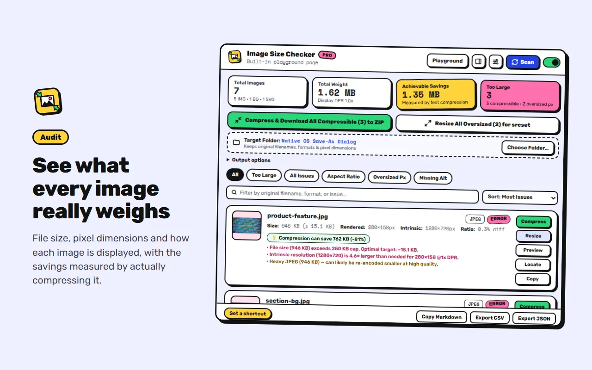
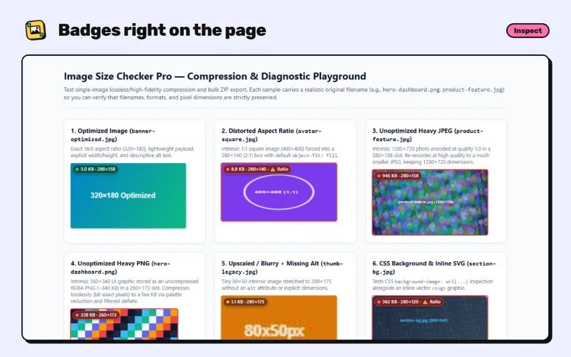

Find the heavy images on any page and compress them as drop-in replacements.
A browser extension for Chrome and Edge. It measures savings by really compressing each image, and the files you save keep the same name, format and dimensions.

What it does
Heavy images slow down page loads and hurt LCP and Core Web Vitals. Image Size Checker Pro shows which images are too big, by how much, and fixes them without changing your markup.
-
Audit
See what every image weighs
- File size, pixel dimensions and displayed size
- Flags heavy, oversized and stretched images, and missing alt text
- Flags missing width and height, and lazy loading above the fold
- Badges on the page, or a report in the popup or side panel
-
Compress
Smaller files, same name and format
- Savings are measured, not guessed
- PNG compression is lossless and pixel-exact
- JPEG and WebP keep high quality, with a before and after preview
- One image at a time, or all of them into a ZIP or a folder
-
Resize
Sized for how images are shown
- 1x and 2x versions for the space each image fills
- Ready-to-paste srcset markup
- Optional WebP copies with picture markup
- Export the audit as CSV, JSON or Markdown


What's new in 3.5.0
Image Size Checker Pro now has a project website with screenshots, install links, the changelog and the privacy policy. The store listing explains more clearly what makes it different: savings are measured by really compressing each image, and you get files with the same name, format and dimensions. How the extension works is unchanged, and your settings carry over.
Private by design
No accounts, analytics or tracking. Pages are scanned only when you ask, everything runs in your browser, and files are saved only to your computer. Read the privacy policy.